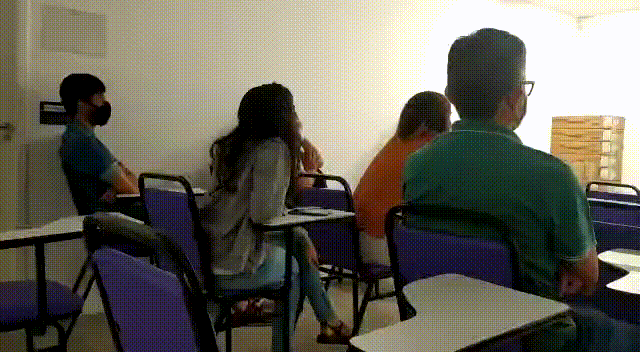

Plataforma de Atendimento para Call Center
| Recebemos o desafio de entender a rotina de atendimento do call center de uma clínica de saúde e buscar soluções para melhorar o atendimento e o trabalho dos seus colaboradores. | |
| Web Design | |
| UI DesignUX Design |

A necessidade
A Squad foi formada com o objetivo de melhorar a experiência de agendamento no call center da empresa.
Call center sempre é considerado um local complicado, por diversos fatores, mas chegamos à conclusão de que a melhor estratégia seria reformular o software utilizado no dia a dia.
Meu papel
Atuei como UX e UI designer, além dos papéis em todas as cerimônias ágeis.
Meu principal desafio aqui foi conduzir o usuário no fluxo de trabalho desejado, em meio a uma quantidade grande de informações e funcionalidades.
Resultados
Em quase 6 meses, conseguimos entregar uma nova forma de trabalho para o call center. Os elogios por parte dos operadores eram constantes e a empolgação a respeito das novas funcionalidades era visível. Além disso, tivemos redução do tempo médio de atendimento em mais de 50%, aumento em 22% do número de orçamentos gerados, volume de 15 mil agendamentos por mês e outros ganhos intangíveis dentro da operação.
Métricas:
Atendimentos de orçamentos; atendimentos de agendamentos; pagamento adiantado; no-show; tempo médio de atendimento.
História
Aqui eu vou detalhar o trabalho nessa squad…
Para iniciar a conversa, vamos mostrar o antes:

{kind=link}
{kind=link}


Como dito no resumo, call center sempre foi visto como um lugar complicado, por diversos fatores. Algumas dores estão ‘fora do escopo’ de atuação de uma squad, são mais relacionadas a negócios, mas nosso time focou na melhoria da velocidade do atendimento dos operadores.
Afinal, uma pessoa que consegue fazer um atendimento satisfatório rapidamente, tem menos stress, gera mais satisfação nos clientes, ganha mais comissão, sente-se mais feliz no trabalho. Mas essas são coisas intangíveis.

Fizemos uma inception, com reuniões diárias, levantamento de dados, com registro em um quadro no Miro e entrevistas com os usuários para descobrir os principais pontos de dores.


Nosso backlog estava planejado de forma simples: 31% dos atendimentos diziam respeito à pesquisa de preço. Fazia total sentido atacar isso primeiro. Em menos de 2 meses fizemos a área de login, “carrinho de compras” e geração do PDF de orçamento.

Precisei desenhar o fluxo desejado para a geração de orçamentos, depois validei com nosso PO e em seguida, tome tela!
A ideia de carrinho de compras veio para atender duas heurísticas de usabilidade: “Correspondência entre o sistema e o mundo real” e “Consistência e padrões”. Quando se quer um orçamento, geralmente, se busca item por item, junta todos em um mesmo local e depois é feita a soma total, com a possibilidade de consultar o valor de cada item. Também poderíamos aproveitar a familiaridade com o funcionamento de outros sites de e-commerce, no mesmo modo do carrinho de compras.


O primeiro resultado ‘prático’ foi o PDF de orçamento. Vou deixar a imagem falar por si só, mas teve bastante mudança de layout e hierarquia de informações:


A seguir vieram as demandas de agendamento, tela do paciente com todo o resumo sobre ele, link de pagamento adiantado para redução de no show, agendamento de pacotes, dashboard para o operador conferir seus resultados e até localização das clínicas para auxiliar no atendimento.


A tela do paciente era das mais importantes, pois trazia todas as informações sobre a pessoa: agendamentos (urgências de agenda bloqueada, agendamentos e confirmações, link de pagamento e histórico), orçamentos feitos, pacotes comprados e retornos disponíveis. Tudo com indicação através de badges e indicadores em tela, com destaque nos itens mais importantes.


Outro destaque que trago é a tela de dashboard do operador, que veio pra substituir o uso de planilhas e um outro sistema que foi descontinuado. Mais uma vez o desafio foi de mostrar uma quantidade grande de informações em números de forma visualmente agradável.
Mais uma tela que não pode ficar de fora é o resumo do agendamento: nela, temos todas as informações a respeito do agendamento de forma consolidada, no ponto de enviar para o paciente.

E, quase terminando, também atacamos a necessidade de ajudar os operadores que precisavam informar o local das clínicas para pessoas de outros estados, ou que ele apenas não soubesse como instruir. A ideia aqui seria de colocar informações sobre a clínica mais próxima, distância e pontos de referência.


Teve mais um trabalho de UX Research também! Nos meus últimos dias de empresa, o PO me fez um pedido pra planejar uma pesquisa de satisfação com os nossos usuários. Nesse questionário eu pude aplicar parte do conhecimento que obtive na leitura do livro “O Teste da Mãe: Como conversar com clientes e descobrir se sua ideia é boa, mesmo com todos mentindo para você” de Rob Fitzpatrick. Infelizmente não deu tempo de colher as respostas :(

{kind=link}
{kind=link}
Nem tudo que foi feito está aqui nesse texto, teve muitoooo mais coisas envolvidas. Mas aqui se encerrou a minha participação na squad. O que mais posso levar dessa experiência é como um time bem alinhado e que se dá bem é fundamental pra entregas de qualidade de forma rápida.
Meus agradecimentos:
Ao “meu PO” Pablo, que conduziu a squad de forma impecável;
Ao nosso grande SM Werbesson, que deixou tudo ágil e organizado;
Aos nossos analistas Vivi e Douglas, que nunca deixaram uma info fora das nossas mãos;
Ao nosso front com Rafa e Franklin, nunca vi um front ser feito tão rápido;
Ao nosso BI com Nilberto, cheio das métricas;
E, por último e menos importante (kkk), o monstro do back Gabriel, famoso Gabigod, youtuber, gamer, palestrante, presente no meta verso e tudo mais.
Deus cuide das nossas ‘doras’.
Que fique registrado o amor e companheirismo que tivemos em tão pouco tempo!